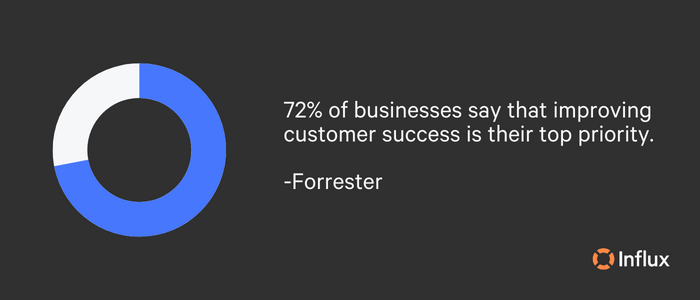
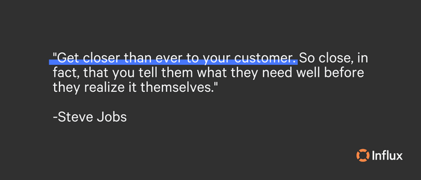
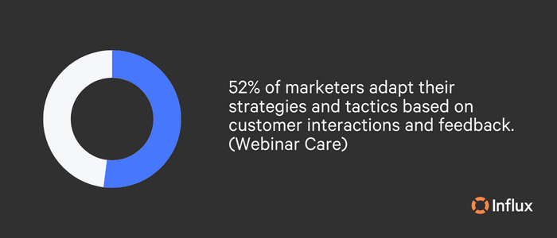

Customer success is vital to long-term revenue growth. Foundationally, it is designed to drive retention. When paired with marketing, both of these teams can inspire one another to create stronger campaigns and more effective strategies that increase both new leads and retention rates.
What is customer success?
Where customer support is reactive, customer success is proactive. Customer success involves foreseeing challenges and questions and proactively providing solutions and answers. It means putting effort towards ensuring that customers are ‘successful’ and getting the most value out of your products or services. The goal of customer success is to create long-term relationships with customers so that you increase customer lifetime value (CLV) and overall customer satisfaction.
Customer success is an important part of any company’s success because:
- Happy, satisfied customers are more likely to continue purchasing.
- It helps to establish trust and build loyalty.
- It reduces churn.
- Retaining happy customers leads to a higher volume of recommendations that increase customer acquisition.

An example of great customer success is supporting consumers in the onboarding phase. Guiding customers from their first experience with your product to educating them on its functionality and value can eliminate daily hassles. Support will reduce and retention will increase if customers are properly trained in using your product. Understanding that this is a proactive endeavor, onboarding allows consumers to be more comfortable with your products and accurately understand their importance.
Why should customer success and marketing teams work together?
Instead of siloing customer success and marketing teams, these departments should work together to produce the best outcomes. Customer success and marketing teams share the same goal: to create positive experiences for customers. Sharing information and resources allows both teams to create more effective and targeted campaigns that are designed to meet the needs and preferences of customers.
For instance, your marketing team can leverage the customer success team’s insights and feedback on customer experience (CX) to develop specialized ads and messaging. Alternatively, the marketing team can notify customer success teams about product launches and sales for proactive customer communication and information. Other benefits include enhanced brand awareness and finding the right strategies that click with long-term customers. Working in conjunction on customer-related initiatives is the best way to understand the customer journey and improve CX.
Pairing customer success and marketing departments
1. Track the right metrics
To assess performance and make sure that customers are receiving value from your product, you should monitor a number of crucial indicators. Recording these metrics can reveal sudden spikes or decreases in product usage that customer success teams can use to inform the IT department, engineering, or marketing teams, or even proactively reach out to customers to stay ahead of problems.
The following are some of the most crucial KPIs to monitor:
- Customer retention rate: This is the percentage of customers who continue to use your products or services over time. A high retention rate is a sign that your customers are happy.
- Customer lifetime value: This is the total amount of money that a customer is expected to spend with your business, or on your products, during the lifetime of an average business relationship.
- Customer satisfaction: This is a measure of how happy your customers are. You can track customer satisfaction by conducting surveys or asking for feedback from your customers.
- Net promoter score (NPS): This is a measure of how likely your customers are to recommend your product or service to others.
- Upsell and cross-sell rate: This is the percentage of your customers who are willing to invest more in your business and are buying additional products or services.
- Churn rate: This is the percentage of customers who stop purchasing from your business over a given period of time. A low churn rate is a sign that customers are not looking for alternatives.

Another thing you’ll want to keep track of is customer feedback. Surveys should not only focus on products but on a consumer’s overall opinion of your brand. Incorporating feedback into marketing and customer success strategies shows you what customers are really thinking, which areas could use some improvement, and what their needs are. Tracking and analyzing these metrics helps customer success and marketing teams to understand customers better and also to know what they respond well to.
2. Retention-focused efforts
Using the metrics above for retention-focused efforts, customer success and marketing teams can work together to create personalized campaigns that are tailored to the specific needs and interests of customers. With the goal of driving engagement and building long-term relationships, customer success and marketing teams can come together to understand customer needs and provide them with tailored solutions that help achieve their goals.
Examples of customer success and marketing teams joining together for retention-based initiatives can include:
- Creating and distributing a customer feedback loop.
- Employing customer relationship marketing.
- Establishing a loyalty program.
- Continuously enhancing CX.
- Simplifying customer interactions.
- Developing a self-serve knowledge base that is updated and refreshed as needed.
According to Think Impact, repeat customers have been measured to spend an average of 67% more than new customers. Your ability to retain and renew customers is an important aspect of growth. To keep customers happy and willing to renew or repurchase, customer success teams should ensure that customers are satisfied and meeting goals, while marketing teams can focus on upselling in campaigns or sharing updates with existing customers that can interest them in furthering their relationship with your business.

3. Proactive onboarding
Perhaps potential customers are confused about exactly how your products or services function and it’s holding them back from making the purchase decision. This is where customer success and marketing can join forces. Creating a strong onboarding process helps customers before they even need help by educating them on exactly how they can benefit from your products or services. The marketing team can then create campaigns and messaging that answer those questions that may be keeping customers on the fence, i.e. this is what our product does, this is how, this is why it’s simple to use, and this is how it benefits you.
Onboarding can assist in keeping customers engaged and improving trial conversions. Proactive customer onboarding makes sure that new clients get off on the right foot. This includes configuring the product to best meet customer requirements, learning how to utilize various features and tools, and becoming accustomed to using the product as a whole.
Best practices in the onboarding process include:
- Optimizing the sign-up process.
- Sending a welcome email.
- First log in with a guided tutorial through each step of the setup process.
- Setting up integrations and inviting colleagues.
- Product walkthroughs.
- Follow-up emails.
Onboarding is designed to proactively prompt and guide the first-time user toward key activation points. The user will gain the quickest understanding of the value of using your product.
Find success with Influx
Pairing your marketing and customer success teams creates powerful results. The two need to work together to set and deliver expectations. At Influx, we understand that there are many factors that come into running a successful business. From SaaS support to customer support and everything in between, we provide you with the support you need so that you can get back to doing what you do best.